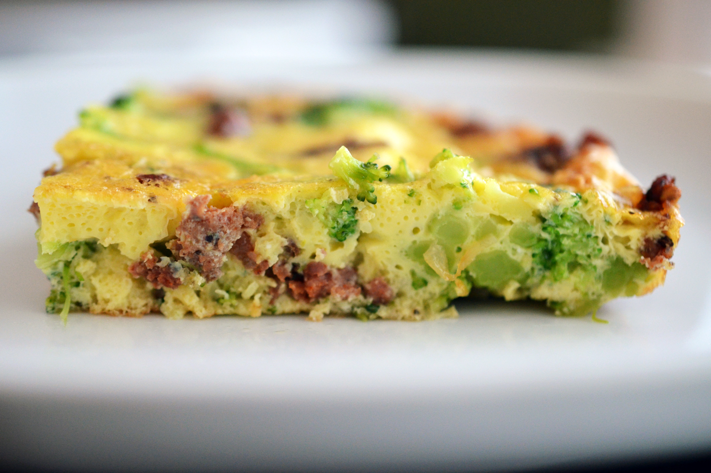

Easy Paleo Fritatta

Description
This easy paleo frittata is the perfect way to use up leftovers!
If you’re looking for a simple Whole30-friendly weeknight dinner,
cook up a frittata!
Ingredients:
- 1 tablespoon ghee
- 1 cup protein (any meat)
- 1 cup frozen broccoli
- 4 large pastured eggs
- 2 tablespoons coconut milk
- 1 teaspoon kosher salt
- Fresh black pepper
Steps:
- Preheat oven to 350F
- Heat ghee in cast iron skillet over medium heat
- Add meat to skillet until heated through
- Put broccoli in bowl, cover with paper towl, and microwave until thawed
- Cut broccoli into bite sized pieces
- Add broccoli to pan and mix to cook thoroughly
- Mix eggs, coconut milk, salt, and pepper in medium bowl
- Poor egg mixture into skillet and cook for 3 to 5 minutes
- Place skilled in over for 10 to 15 minutes
- Broil the skillet for a final 2 minutes or until frittata puffs up